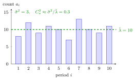

SCV Estimation from Counts¶
Proposition¶
Let jobs arrive with i.i.d. inter-arrival times with mean and finite variance , so that
and let be the number of arrivals in (counting process). Then and for large , so
Hence, if only the numbers of arrivals in consecutive periods of equal length have been logged, the inter-arrival SCV can be estimated by
Interpretation¶
In practice the arrival moments of jobs are often not recorded, only the day or hour in which each customer arrived. The proposition says that such counts still contain the variability of the inter-arrival times: the ratio of the variance to the mean of the number of arrivals per period estimates , which is the input Sakasegawa's formula needs.

The figure shows the ten counts of Example 1. They fluctuate around their mean with , much less than the variance that Poisson arrivals would produce, so the estimate says the arrivals are more regular than Poisson.
The derivation in the notes uses , which links the count to the arrival time . The central limit theorem makes approximately standard normal. Assuming that is also approximately standard normal, matching the two statements forces , so .
Each assumption matters. The inter-arrival times must be i.i.d. with a finite second moment, and the process must be stationary over the logging horizon, otherwise and mix different regimes. The result is a limit for long periods: each period must contain many arrivals, as Example 3 shows. Finally, is the mean count per period, not a rate per hour; the ratio is dimensionless, so no conversion is needed. A common slip is to divide by , which gives the SCV of the counts, not of the inter-arrival times.
Key Results¶
- Asymptotic variance of counts. and , so .
- Estimator. from the mean and variance of the counts per period; with finitely many periods the limits are replaced by averages.
- Poisson benchmark. For a Poisson process, has variance equal to its mean for every , matching for exponential inter-arrival times.
- Service times. The notes remark that the same idea can be used to estimate .
- Use. The estimate feeds the variability factor of Sakasegawa's formula.
Examples¶
1. Ten days of counts. The numbers of jobs arriving on ten days are . Their sum is and the sum of squares is , so
For a single server with , Sakasegawa's variability factor is instead of under a Poisson assumption: the estimated expected waiting time is lower.
2. Poisson arrivals. If arrivals form a Poisson process with rate , each count is , so and the estimate is exactly , whatever the period length.
3. Periods that are too short. Jobs arrive exactly every hours, at times , so . Counting per hour gives the repeating pattern : mean , mean square , variance , and the ratio , far from . Counting per three hours gives in every period, variance and the correct value . For regular arrivals every count is one of two neighbouring integers, so the variance stays at most while the mean grows with the period length, and the ratio tends to .
4. Wrong denominator. In Example 1, is the SCV of the daily counts. It shrinks as the periods get longer and says nothing about the inter-arrival times; the estimate of is .
Prerequisites¶
Related Concepts¶
- Sakasegawa's Formula
- Poisson Process
- Poisson Distribution
- Variance and Standard Deviation
- Server Setup
- Departure SCV Approximation
Sources¶
- Stochastic Operations Research · Week 6
- N. D. van Foreest, Sample Path Analysis and Simulation of Stochastic Systems, Section 6.1
Aliases: estimating C_a^2 from arrival counts, inter-arrival SCV from counts per period, variance-to-mean ratio of counts, index of dispersion of counts Keywords: C_a^2 \approx \tilde\sigma^2/\tilde\lambda, \tilde\lambda, \tilde\sigma^2, \operatorname{Var}(A(t))/\mathbb{E}[A(t)], C_a^2=\lambda^2\sigma^2, arrivals per period, renewal process, central limit theorem, squared coefficient of variation Symbols: alpha, infinity, lambda, sigma, square root, sum
Last updated: 29 October 2026 20:42
SCV Estimation from CountsSquared Coefficient of VariationCounting ProcessArrival and Departure RatesCentral Limit TheoremSakasegawa's FormulaPoisson ProcessPoisson DistributionVariance and Standard DeviationServer SetupDeparture SCV Approximation